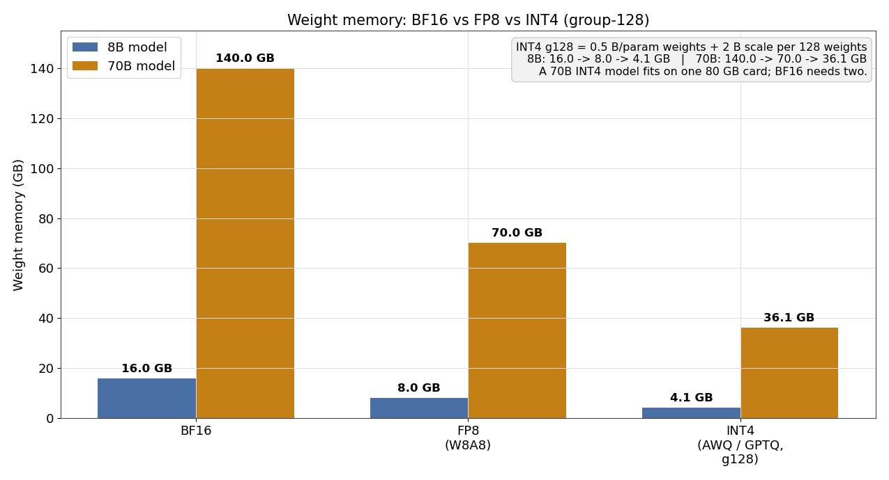
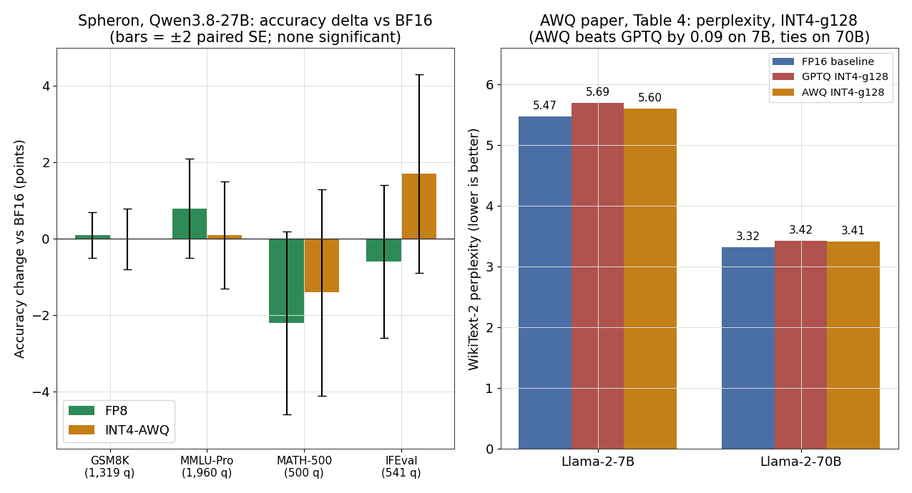
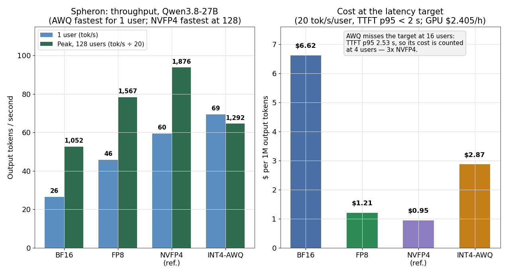
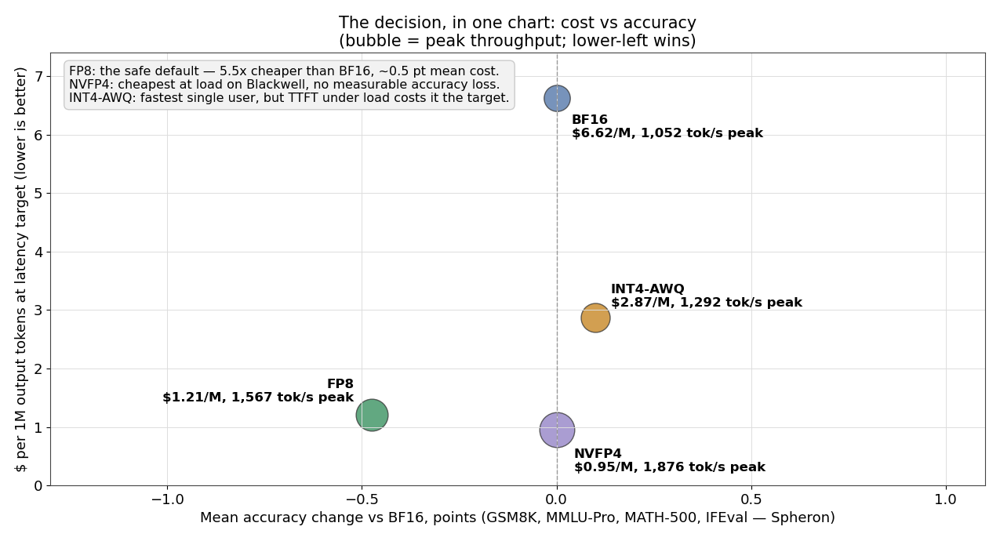

Everyone quotes a quantization method like a spec sheet: "4-bit, 2.7x faster, negligible accuracy loss." The numbers that actually decide a serving bill are different — same model, same prompts, same harness, three quantizations. That study now exists, and it is one day old: Spheron Research measured Qwen3.8-27B in BF16, FP8, NVFP4 and INT4-AWQ on one RTX PRO 6000 through vLLM, published November 24, 2026. The headline is blunt: at a 20-tokens-per-second-per-user latency target, FP8 costs $1.21 per million output tokens, INT4-AWQ costs $2.87, and BF16 costs $6.62 — while none of the three loses a statistically significant amount of accuracy. The cheapest checkpoint is not the smallest one, and the fastest single-user checkpoint is not the cheapest one. That is the whole post in one paragraph; the rest is the arithmetic behind it.
The ELI5 version
A model's weights are numbers. BF16 writes each number with 16 bits of precision — like writing every price to the cent. Quantization writes the same numbers with fewer bits, and each method is a different way of deciding which detail to throw away. GPTQ looks at how much each weight matters to the loss (second-order information, the Hessian) and fixes up the remaining weights to compensate for each rounding error as it goes. AWQ looks at which weights see the biggest activations — about 1% of channels carry most of the signal — and scales those up before rounding so they get a finer grid. FP8 keeps 8 bits per weight, roughly half the precision of BF16, and rescales on the fly. All three are post-training: no retraining, a small calibration set at most. The question is never "which is best" — it is "what does each one cost you, in accuracy and in dollars, on your hardware."
The memory arithmetic: one formula, three numbers
Weights are the fixed cost of serving. The bytes per parameter are:
BF16: 2.0 bytes/param
FP8: 1.0 bytes/param (per-tensor scale is negligible)
INT4 group-128: 0.5 bytes weights + one FP16 scale (2 bytes) per 128 weights = 0.515625 bytes/param

Two things to notice. First, the INT4 scale overhead is real but small — 3.1% over bare 4-bit — so "4-bit = quarter the memory" is nearly true for weights (unlike NVFP4 KV cache, where the scales cost more). Second, the memory you save on weights is not the prize by itself: it is KV cache headroom. An 8B model that drops from 16 GB to 4 GB of weights frees 12 GB for KV cache — on a 7B-class model served through vLLM's online FP8, the KV cache grew from 959,936 tokens to 1,074,320 tokens on the same card (Runcrate's H100 test, October 2026). Part 2 of this lane showed why memory, not FLOPs, caps concurrency; quantization moves the constant.
What each method actually does
GPTQ (Frantar et al., 2022) quantizes weights one at a time, in a fixed order, using approximate second-order (Hessian) information to adjust the not-yet-quantized weights to compensate for the error just introduced. It is the thorough method: the paper reports quantizing a 175B-parameter model in roughly 4 GPU-hours at 3–4 bits, with inference speedups near 3.25x on an A100 and 4.5x on an A6000 against FP16 (paper-reported, on the paper's hardware). The cost is calibration: it needs a calibration set and a Hessian pass, and the compensation can overfit that set.
AWQ (Lin et al., arXiv:2306.00978, MLSys 2024 Best Paper) starts from a different observation: not all weights matter equally, and activation magnitude tells you which ones do. About 1% of channels are salient. AWQ scales those channels up before quantization and folds the scale back into the next layer's weights — mathematically identical output in full precision, but the salient weights get a finer quantization grid. It needs only a small calibration set to measure per-channel activation magnitudes, no Hessian. The paper reports a 3.2–3.3x average speedup over Hugging Face FP16 across a range of models (paper-reported).
FP8 is the blunt instrument, and that is its virtue. Weights go to FP8 (E4M3) with a per-tensor or per-token scale; activations are scaled dynamically. In vLLM there are two ways in: a pre-quantized FP8 checkpoint (Qwen's official Qwen3-8B-FP8, or llm-compressor / ModelOpt output), or online FP8 — add --quantization fp8 and vLLM converts the BF16 checkpoint at load time with a per-tensor scale. No calibration run, no pre-quantized file, no second artifact to version. The companion notebook's toy demo shows why the group structure matters: on a 512×512 matrix with rows at different scales, per-tensor INT4 has 7.3x the error of per-group-128, and AWQ-style scaling of the salient channels cuts the activation-weighted error a further 1.6x.
Accuracy: same model, same prompts, three quantizations
The Spheron study is the rare one that holds everything else fixed: Qwen3.8-27B, vLLM 0.34.0 as reported, one RTX PRO 6000, lm-evaluation-harness 0.4.13, temperature 0, thinking off, one pass per eval. The accuracy table, with paired changes against BF16:
| Eval | BF16 | FP8 | NVFP4 (ref.) | INT4-AWQ |
|---|---|---|---|---|
| GSM8K (1,319 q) | 96.1 | 96.2 (+0.1 ± 0.6) | 96.2 (+0.1 ± 0.7) | 96.1 (0.0 ± 0.8) |
| MMLU-Pro (1,960 q) | 71.3 | 72.0 (+0.8 ± 1.3) | 71.4 (+0.1 ± 1.4) | 71.4 (+0.1 ± 1.4) |
| MATH-500 (500 q) | 78.4 | 76.2 (−2.2 ± 2.4) | 76.4 (−2.0 ± 2.8) | 77.0 (−1.4 ± 2.7) |
| IFEval (541 q) | 81.7 | 81.1 (−0.6 ± 2.0) | 83.5 (+1.8 ± 2.6) | 83.4 (+1.7 ± 2.6) |
Every bar crosses zero: no quantized checkpoint loses a statistically significant amount of accuracy. The largest single move is FP8's −2.2 points on MATH-500, inside its ±2.4 paired standard error — and Spheron is explicit that with 500 questions they could only detect a drop of about 2.5 points or more, so a small real loss on hard math may be hiding under the noise. The mean change across the four evals is FP8 −0.5 points, NVFP4 0.0, AWQ +0.1.

The AWQ-vs-GPTQ head-to-head deserves its own paragraph, because the gap is smaller than the folklore. The AWQ paper's own Table 4 (WikiText-2 perplexity, INT4-g128) has AWQ ahead of GPTQ by 0.09 on Llama-2-7B (5.60 vs 5.69) and tied on 70B (3.41 vs 3.42). At INT3-g128 the gap widens — 6.24 vs 6.43 on 7B — but at INT4 it is nearly a tie. And it is capability-dependent, not uniform: the independent sm120-quant-bench (Qwen3-8B on an RTX 5090, frozen evals with bootstrap confidence intervals) found the AWQ and GPTQ checkpoints 0.07 perplexity apart (19.73 vs 19.66) yet 6–7 points apart on HumanEval and a numeric-fidelity probe, in GPTQ's favour — while GSM8K favoured neither (AWQ 88.8 vs BF16 91.8, a −3.0 drop). A 2026 aggregation across formats agrees on the scale: AWQ 4-bit costs ~1.7% perplexity vs FP16, GPTQ ~2.5% (Presenc.ai, aggregating published benchmarks). The honest summary: AWQ edges GPTQ on perplexity by a hair, GPTQ sometimes wins on code and arithmetic, and either gap is smaller than the gap between 4-bit and 8-bit on hard reasoning. If your workload is math or code, measure both — the name on the checkpoint will not tell you.
The other accuracy datapoint worth having: on a different model and rig, FP8 is nearly free. AIMultiple's Qwen3-32B benchmark on an H100 (vLLM 0.17.0, batch size 1) has FP8 at 69.6% MMLU-Pro vs 70.2% BF16 (−0.6 points) and identical HumanEval (39.0% both), while GPTQ-Int4 loses under 2 points on MMLU-Pro but drops 8 points on HumanEval (39.0% → 31.1%). The pattern repeats across studies: 8-bit costs almost nothing; 4-bit costs a little, concentrated in code and math. And on a 7B model with online FP8, Runcrate's H100 test found GSM8K 270/300 vs 272/300 for BF16 — a 2-question difference on 300 questions, inside the ~1.7-point standard error.
Throughput and cost: where the ranking flips
Same Spheron rig, vllm bench serve, 1,024 tokens in / 512 out, median of three repeats:
| Checkpoint | 1 user (tok/s) | Peak, 128 users (tok/s) | $ per 1M tokens at target |
|---|---|---|---|
| BF16 | 26.5 | 1,052 | $6.62 (at 4 users) |
| FP8 | 45.8 | 1,567 | $1.21 (at 16 users) |
| NVFP4 (ref.) | 59.5 | 1,876 | $0.95 (at 16 users) |
| INT4-AWQ | 69.4 | 1,292 | $2.87 (at 4 users) |

Read the table in two directions. Single user: AWQ wins — 69.4 tok/s, 2.6x BF16, the fastest decode of the four, because INT4 weights are the smallest thing to stream from memory and decode at batch size 1 is memory-bandwidth-bound. At load: AWQ loses — its peak throughput (1,292 tok/s) trails FP8 (1,567) and NVFP4 (1,876), and its cost at the latency target is 3x NVFP4's. Why? Time to first token. At 16 concurrent users AWQ's first-token p95 is 2.53 s against a 2 s target, while FP8 is 1.44 s and NVFP4 1.05 s. AWQ's decode is quick (19.2 ms per token, the fastest of the four) but its prefill is slow — the Marlin weight-only kernel dequantizes INT4 weights on the fly, and that cost lands on the first token. So AWQ is the best checkpoint for one user at a time and the worst of the three quantized options under a latency SLO. That is exactly the kind of reversal a spec sheet hides.
The independent numbers agree on the shape. AIMultiple's Qwen3-32B on H100 (batch size 1): BF16 26 tok/s, FP8 37.9 (1.46x), GPTQ-Int8 43.3, GPTQ-Int4 69.9 (2.69x) — INT4 fastest at batch 1, FP8 a solid middle. Runcrate's 7B H100 test with online FP8: 1.40x the output throughput at 64 concurrent requests (6,147 vs 4,401 tok/s) and 1.55x for a single user, with cost per million output tokens falling from $10.33 to $6.70 at concurrency 1 and $0.24 to $0.17 at 64. And the vendor-reported FP8 case: Falcon-H1R-7B-FP8 (NVIDIA ModelOpt) keeps AIME25 within 0.8 points and GPQA-D within 0.1, with a 1.2–1.5x throughput boost and weights halved from 14.2 GB to 7.9 GB — vendor-reported, but consistent with the independent measurements above. Energy follows the same ranking: at 128 users NVFP4 uses 0.25 joules per output token, FP8 0.30, AWQ 0.40 (Spheron, nvidia-smi sampling).
What changed in vLLM 0.33: methods, kernels, and three traps
The quantization page in the current vLLM docs (read November 25, 2026) is where most people trip, because the method name, the scheme, and the kernel are three different choices:
- Methods (
--quantization):awq/awq_marlin/auto_awq,gptq/gptq_marlin/auto_gptq,fp8(online, per-tensor static),modelopt(FP8),compressed-tensors(llm-compressor: FP8 W8A8, INT4 W4A16, INT8 W4A8/W8A8). For a pre-quantized checkpoint vLLM readsquant_methodfromconfig.json, so the flag is normally omitted. - Schemes: FP8 comes as
fp8_per_tensor_static(one FP32 scale per tensor, computed at load),fp8_per_token(dynamic, per forward pass), ormxfp8(E8M0 scale per 32 elements). AWQ and GPTQ checkpoints are W4A16 with group-128 scales. - Hardware: AWQ needs Turing or newer, GPTQ Volta or newer, Marlin Turing or newer; llm-compressor FP8 W8A8 needs Ada or Hopper (and runs on AMD). Ampere has no FP8 tensor cores — FP8 still saves memory there, but activations dequantize to BF16 before attention.
Three traps, all current:
- Marlin is weight-only. Marlin kernels no longer quantize activations to INT8 or FP8 — Marlin always runs with 16-bit activations. A 4-bit AWQ or GPTQ checkpoint on the Marlin path is W4A16: the weights shrink, the activations stay BF16, and the throughput win is the memory-bandwidth win only. The old
VLLM_MARLIN_INPUT_DTYPEenv var has been removed — setting it is an error. For W4A8, use thehummingmethod withVLLM_HUMMING_INPUT_QUANT_CONFIG. - The fallback is silent. If the kernel for a requested activation scheme is unavailable for the device, vLLM falls back to a weight-only kernel by default — W8A8 runs as W8A16, W4A4 as W4A16 — and logs a warning once. It costs no accuracy, but it is not the scheme the checkpoint was calibrated with. Set
VLLM_STRICT_QUANT_SCHEME=1to forbid the fallback and fail at startup instead. fp_quantis gone. Thefp_quantquantization method and the QuTLASS backend have been removed — use a compressed-tensors checkpoint instead. If you are following a tutorial from early 2026 that sets--quantization fp_quant, it will not start.
# Online FP8: no pre-quantized checkpoint, no calibration run.
python -m vllm.entrypoints.openai.api_server \
--model Qwen/Qwen3-8B \
--quantization fp8 --dtype bfloat16
# INT4-AWQ, strict: refuse the silent W4A16 fallback rather than taking it.
VLLM_STRICT_QUANT_SCHEME=1 python -m vllm.entrypoints.openai.api_server \
--model Qwen/Qwen3-8B-AWQ \
--quantization awq --dtype bfloat16
The decision, in one chart

The decision ladder
- Default, and the one to try first: FP8. One flag (
--quantization fp8), no calibration, no pre-quantized artifact, ~0.5 points mean accuracy cost, 5.5x cheaper per token than BF16 at a latency target. On Hopper it is hardware-native; on Ampere it still halves weight memory and grows the KV pool. - Single-user latency is the product (a coding assistant, a local demo): INT4-AWQ. Fastest decode per user (69.4 tok/s vs 45.8 for FP8 on the Spheron rig), smallest weights, fits a 70B model on one 80 GB card. But measure TTFT under your real concurrency before you commit — it missed a 2 s p95 target at 16 users.
- Maximum throughput per dollar at load, on Blackwell: NVFP4 — $0.95/M, highest peak throughput, no measurable accuracy loss in this study. The caveat is hardware: H100 has no FP4 tensor cores, so on Hopper the ranking can change, and Spheron says so themselves.
- AWQ vs GPTQ, when you have already chosen INT4: pick by kernel support and your own evals, not by the name. The perplexity gap is 0.09 points on 7B and zero on 70B; the code/math gap can run either way by eval. Both run on Marlin as W4A16 in current vLLM.
- Hard math or code at 4-bit: budget for a real loss. GPTQ-Int4 dropped 8 points on HumanEval in one independent benchmark; FP8 held it flat. If the eval that matters to you is code, 8-bit is the safer floor.
- Before you deploy any of it: run your own evals on your own prompts. Every accuracy figure in this post is the cited study's or paper's own measurement — one model, one GPU, one harness each. The quantization that wins on Qwen3.8-27B on Blackwell may not win on your model on your GPU, and the only measurement that settles it costs one afternoon.
Takeaways
- Weights: 8B is 16.0 GB in BF16, 8.0 GB in FP8, 4.1 GB in INT4-g128; 70B is 140 / 70 / 36.1 GB. INT4 fits a 70B model on a single 80 GB card.
- Same model, same prompts (Spheron, Qwen3.8-27B, Nov 2026): FP8, NVFP4 and INT4-AWQ all sit within noise of BF16 on GSM8K, MMLU-Pro, MATH-500 and IFEval. Largest move: FP8 −2.2 pts on MATH-500, inside its ±2.4 error bar.
- Throughput flips with load: AWQ is fastest for one user (69.4 tok/s) but misses a 2 s TTFT p95 target at 16 users, so its cost at target is $2.87/M — 3x NVFP4's $0.95/M. FP8 is the middle that holds up everywhere: $1.21/M, 5.5x cheaper than BF16.
- AWQ vs GPTQ is a hair, not a rout: 0.09 perplexity points on Llama-2-7B INT4-g128, tied on 70B (AWQ paper Table 4); capability-dependent on code and math.
- vLLM 0.33 traps: Marlin is weight-only (W4A16) — W4A8 needs the humming method; the W8A8→W8A16 fallback is silent unless
VLLM_STRICT_QUANT_SCHEME=1;fp_quantis removed.
Honesty note: all benchmark and accuracy figures in this post are the cited sources' own reported results — Spheron Research (measured Nov 23, published Nov 24, 2026; vLLM 0.34.0 as reported, RTX PRO 6000, Qwen3.8-27B), the AWQ paper (arXiv:2306.00978, Table 4) and GPTQ paper, AIMultiple (Qwen3-32B, H100, vLLM 0.17.0), Runcrate (7B, H100, vLLM 0.11.0, online FP8), Falcon-H1R-7B-FP8 (vendor-reported, NVIDIA ModelOpt), sm120-quant-bench (Qwen3-8B, RTX 5090), and Presenc.ai's aggregation of published benchmarks — not independently measured. The memory arithmetic, toy quantization-error demo, and config guard are computed in the companion notebook. No Meta content, per standing exclusion.
Companion notebook: quant_awq_gptq_fp8.ipynb — weight-memory arithmetic, toy quantization-error demo (per-tensor 7.3x worse than per-group-128; AWQ-style scaling 1.6x better on activation-weighted error), Spheron trade-off table with significance checks, and a vLLM 0.33 config guard. All cells exec-tested.